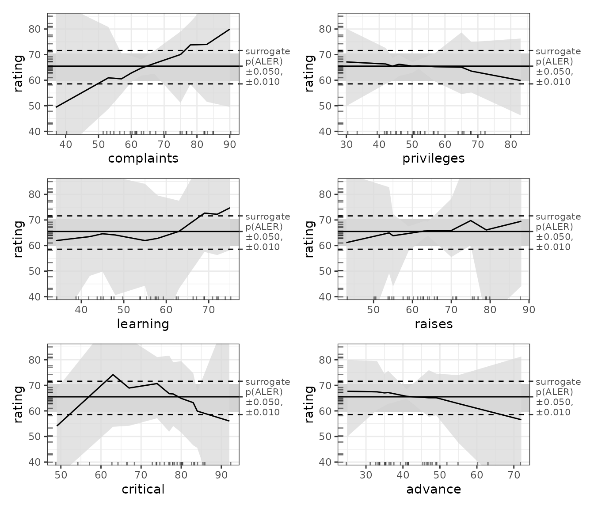

Analyzing small datasets (fewer than 2000 rows) with ALE
Chitu Okoli
August 27, 2025
Source:vignettes/ale-small-datasets.Rmd
ale-small-datasets.RmdThis vignette demonstrates using the ale package on small datasets, as is often the case with statistical inference. You should first read the introductory vignette that explains general functionality of the package; this vignette goes beyond those details to discuss issues unique to small datasets.
What is a “small” dataset?
An obvious question is, “How small is ‘small’?” This is a very complex question and it is way beyond the scope of this vignette to try to answer it rigorously. But we can simply say that the key issue at stake is that applying the training-test split that is common in machine learning is a crucial technique for increasing the generalizability of data analysis. So, the question becomes focused to, “How small is too small for a training-test split for machine learning analysis?” The rule of thumb I am familiar with is that machine learning requires at least 200 rows of data for each predictor variable. So, for example, if you have five input variables, you would need at least 1000 rows of data. But note that this does not refer to the size of the entire dataset but to the minimum size of the training subset. So, if you carry out an 80-20 split on the full dataset (that is, 80% training set), then you would need at least 1000 rows for the training set and another 250 rows for the test set, for a minimum of 1250 rows. (And if you carry out hyperparameter tuning with cross validation on that training set, then you need even more data.) If you see where this is headed, you might quickly realize that most datasets of less than 2000 rows are probably “small”. You can see that even many datasets that are more than 2000 rows are nonetheless “small”, and so probably need the techniques mentioned in this vignette.
We begin by loading the necessary libraries.
attitude dataset
For this analysis, we use the attitude dataset, built-in
with R: “From a survey of the clerical employees of a large financial
organization, the data are aggregated from the questionnaires of the
approximately 35 employees for each of 30 (randomly selected)
departments.” The numbers give the percent proportion of favourable
responses to seven questions in each department. Since we’re talking
about “small” datasets, we figure that we might as well demonstrate
principles with extremely small examples.
Format
A data frame with 30 observations on 7 variables. The first column are the short names from the reference, the second one the variable names in the data frame:
| Variable | Type | Description | |
|---|---|---|---|
| Y | rating | numeric | Overall rating |
| X[1] | complaints | numeric | Handling of employee complaints |
| X[2] | privileges | numeric | Does not allow special privileges |
| X[3] | learning | numeric | Opportunity to learn |
| X[4] | raises | numeric | Raises based on performance |
| X[5] | critical | numeric | Too critical |
| X[6] | advance | numeric | Advancement |
Source
Chatterjee, S. and Price, B. (1977) Regression Analysis by Example. New York: Wiley. (Section 3.7, p.68ff of 2nd ed.(1991).)
str(attitude)
#> 'data.frame': 30 obs. of 7 variables:
#> $ rating : num 43 63 71 61 81 43 58 71 72 67 ...
#> $ complaints: num 51 64 70 63 78 55 67 75 82 61 ...
#> $ privileges: num 30 51 68 45 56 49 42 50 72 45 ...
#> $ learning : num 39 54 69 47 66 44 56 55 67 47 ...
#> $ raises : num 61 63 76 54 71 54 66 70 71 62 ...
#> $ critical : num 92 73 86 84 83 49 68 66 83 80 ...
#> $ advance : num 45 47 48 35 47 34 35 41 31 41 ...
summary(attitude)
#> rating complaints privileges learning raises
#> Min. :40.00 Min. :37.0 Min. :30.00 Min. :34.00 Min. :43.00
#> 1st Qu.:58.75 1st Qu.:58.5 1st Qu.:45.00 1st Qu.:47.00 1st Qu.:58.25
#> Median :65.50 Median :65.0 Median :51.50 Median :56.50 Median :63.50
#> Mean :64.63 Mean :66.6 Mean :53.13 Mean :56.37 Mean :64.63
#> 3rd Qu.:71.75 3rd Qu.:77.0 3rd Qu.:62.50 3rd Qu.:66.75 3rd Qu.:71.00
#> Max. :85.00 Max. :90.0 Max. :83.00 Max. :75.00 Max. :88.00
#> critical advance
#> Min. :49.00 Min. :25.00
#> 1st Qu.:69.25 1st Qu.:35.00
#> Median :77.50 Median :41.00
#> Mean :74.77 Mean :42.93
#> 3rd Qu.:80.00 3rd Qu.:47.75
#> Max. :92.00 Max. :72.00We first run ALE analysis on this dataset as if it were a valid regular dataset, even though it is too small for a proper training-test split. This is a small-scale demonstration mainly to demonstrate that ale package is valid for analyzing even small datasets, not just the large datasets typically used for machine learning.
ALE for ordinary least squares regression (multiple linear regression)
Ordinary least squares (OLS) regression is the most generic multivariate statistical technique. Thus, we use it as a baseline illustration to help motivate the value of ALE for interpreting the analysis of small data samples.
We train an OLS model to predict average rating:
lm_attitude <- lm(rating ~ ., data = attitude)
summary(lm_attitude)
#>
#> Call:
#> lm(formula = rating ~ ., data = attitude)
#>
#> Residuals:
#> Min 1Q Median 3Q Max
#> -10.9418 -4.3555 0.3158 5.5425 11.5990
#>
#> Coefficients:
#> Estimate Std. Error t value Pr(>|t|)
#> (Intercept) 10.78708 11.58926 0.931 0.361634
#> complaints 0.61319 0.16098 3.809 0.000903 ***
#> privileges -0.07305 0.13572 -0.538 0.595594
#> learning 0.32033 0.16852 1.901 0.069925 .
#> raises 0.08173 0.22148 0.369 0.715480
#> critical 0.03838 0.14700 0.261 0.796334
#> advance -0.21706 0.17821 -1.218 0.235577
#> ---
#> Signif. codes: 0 '***' 0.001 '**' 0.01 '*' 0.05 '.' 0.1 ' ' 1
#>
#> Residual standard error: 7.068 on 23 degrees of freedom
#> Multiple R-squared: 0.7326, Adjusted R-squared: 0.6628
#> F-statistic: 10.5 on 6 and 23 DF, p-value: 1.24e-05At the very least, the ale package is useful for
visualizing the effects of model variables. Note that for now, we run
ALE() with no bootstrapping (the default) because small
samples require a special bootstrap approach, as explained below. For
now, all we are doing is using ALE to accurately visualize what the
model estimates.
# For speed, these examples use retrieve_rds() to load pre-created objects
# from an online repository.
# To run the code yourself, execute the code blocks directly.
serialized_objects_site <- "https://github.com/tripartio/ale/raw/main/download"
ale_lm_attitude_simple <- retrieve_rds(
# For speed, load a pre-created object by default.
c(serialized_objects_site, 'ale_lm_attitude_simple.0.5.2.rds'),
{
# To run the code yourself, execute this code block directly.
# For standard models like lm that store their data,
# there is no need to specify the data argument.
ALE(lm_attitude)
}
)
# saveRDS(ale_lm_attitude_simple, file.choose())
# Print all plots
plot(ale_lm_attitude_simple) |>
print(ncol = 2)
#> Warning in annotate(geom = "label", x = y_summary["max"], y =
#> which(estimates$aler_max == : Ignoring unknown parameters: `label.size`
This visualization confirms what we see in the model coefficients above: complaints have a strong positive effect on ratings and learning has a more moderate effect. However, the ALE indicates a stronger effect of advance than the regression coefficients suggest. The other variables have relatively little effect on ratings. We will see shortly that proper bootstrapping of the model can shed some light on the discrepancies.
Full model bootstrapping
We have referred frequently to the importance of bootstrapping. None
of our model results, with or without ALE, should be considered reliable
without being bootstrapped. For large datasets whose models have been
properly trained and evaluated on separate subsets before ALE analysis,
an ALE object can bootstrap the ALE results of the model
trained on the full dataset. However, when a dataset is too small to be
subdivided into training and test sets, then the entire model should be
bootstrapped, not just the ALE data from a single trained model. That
is, multiple models should be trained, one on each bootstrap sample. The
reliable results are the average results of all the bootstrap models,
however many there are.
The ModelBoot object automatically carries out
full-model bootstrapping suitable for relatively smaller datasets.
Specifically, it:
- Creates multiple bootstrap samples (default 100; the user can specify any number);
- Creates a model on each bootstrap sample;
- Calculates model overall statistics, variable coefficients, and ALE values for each model on each bootstrap sample;
- Calculates the mean, median, and lower and upper confidence intervals for each of those values across all bootstrap samples.
The constructor for S7 ModelBoot object
requires a model object as its first argument–any R model object that
can generate numeric predictions. The second argument is the dataset.
For objects that follow standard R modelling conventions,
ModelBoot() should be able to automatically recognize and
parse the model object, so the data object is often optional. So, here
is the creation of a ModelBoot object:
mb_lm_attitude <- retrieve_rds(
# For speed, load a pre-created object by default.
c(serialized_objects_site, 'mb_lm_attitude.0.5.2.rds'),
{
# To run the code yourself, execute this code block directly.
# For standard models like lm that store their data,
# there is no need to specify the data argument.
ModelBoot(lm_attitude) # 100 bootstrap iterations by default
}
)
# saveRDS(mb_lm_attitude, file.choose())By default, a ModelBoot object creates 100 bootstrap
samples of the provided dataset and creates 100 + 1 models on the data
(one for each bootstrap sample and then once for the original dataset).
(However, so that this illustration runs faster, we demonstrate it here
with only 10 iterations.) Beyond ALE data, it also provides bootstrapped
overall model statistics (provided through broom::glance())
and bootstrapped model coefficients (provided through
broom::tidy()). Any of the default options for
broom::glance(), broom::tidy(), and
ALE() can be customized, along with defaults for the
ModelBoot constructor, such as the number of bootstrap
iterations. You can consult the help file for these details with
help(ModelBoot).
A ModelBoot has the following properties (depending on
values requested in the output argument:
-
model_stats: bootstrapped results frombroom::glance() -
model_coefs: bootstrapped results frombroom::tidy() -
ale: bootstrapped ALE data and plots -
boot_data: full bootstrap data (not returned by default)
Here are the bootstrapped overall model statistics:
mb_lm_attitude@model_stats
#> # A tibble: 12 × 7
#> name boot_valid conf.low median mean conf.high sd
#> <chr> <dbl> <dbl> <dbl> <dbl> <dbl> <dbl>
#> 1 r.squared NA 6.12e-1 0.788 0.767 0.877 0.0726
#> 2 adj.r.squared NA 5.11e-1 0.733 0.706 0.845 0.0915
#> 3 sigma NA 4.59e+0 6.27 6.25 7.55 0.823
#> 4 statistic NA 6.05e+0 14.2 14.3 27.3 5.86
#> 5 p.value NA 2.35e-9 0.000000983 0.0000730 0.000651 0.000261
#> 6 df NA 6 e+0 6 6 6 0
#> 7 df.residual NA 2.3 e+1 23 23 23 0
#> 8 nobs NA 3 e+1 30 30 30 0
#> 9 mae 6.77 5.35e+0 NA NA 10.8 1.57
#> 10 sa_mae 0.629 3.17e-1 NA NA 0.745 0.117
#> 11 rmse 8.09 6.16e+0 NA NA 12.9 1.82
#> 12 sa_rmse 0.661 4.34e-1 NA NA 0.759 0.0944Here are the bootstrapped model coefficients:
mb_lm_attitude@model_coefs
#> # A tibble: 7 × 6
#> term conf.low median mean conf.high std.error
#> <chr> <dbl> <dbl> <dbl> <dbl> <dbl>
#> 1 (Intercept) -17.8 11.2 11.7 44.8 15.4
#> 2 complaints 0.347 0.648 0.632 0.903 0.141
#> 3 privileges -0.321 -0.0912 -0.0689 0.269 0.162
#> 4 learning -0.110 0.272 0.260 0.624 0.196
#> 5 raises -0.225 0.0958 0.114 0.508 0.203
#> 6 critical -0.366 0.0397 0.0190 0.320 0.194
#> 7 advance -0.683 -0.197 -0.205 0.193 0.219Here we can visualize the results of the ALE plots.
plot(mb_lm_attitude) |>
print(ncol = 2)
#> Warning in annotate(geom = "label", x = y_summary["max"], y =
#> which(estimates$aler_max == : Ignoring unknown parameters: `label.size`
To draw formal conclusions from this analysis, we need a more formal statistical framework based on ALE, which is what we describe in the vignette on ALE-based statistics for statistical inference. However, we can generally infer that:
- Complaints that were handled at below around 55% led to below-average overall ratings; complaints that were handled above around 72% are associated with above-average overall ratings.
- The 95% bootstrapped confidence intervals of every other variable fully overlap almost the entirety of the median. Thus, despite the general trends of some of the data (in particular learning’s positive trend and advance’s negative trend), the data does not seem to support claims that any other factor had a convincingly meaningful effect on ratings.
Although this is a basic demonstration, it readily shows how crucial proper bootstrapping is to make meaningful inferences from data analysis.
ALE for generalized additive models (GAM)
A major limitation of OLS regression is that it models all relationships between the x variables and y as straight lines. But it is unlikely that all relationships are truly linear. OLS cannot accurately capture non-linear relationships.
Because the samples here are relatively small, we will use generalized additive models (GAM) for the modelling. To grossly oversimplify things, GAM is an extension of statistical regression analysis that lets the model fit flexible patterns in the data instead of being restricted to the best-fitting straight line. It is an ideal approach for samples that are too small for machine learning because it provides flexible curves unlike ordinary least squares regression yet will not overfit excessively as would most machine learning techniques when working with such small samples.
With GAM, the variables that we want to become flexible need to be
wrapped in the s (smooth) function, e.g.,
s(complaints). For this example, we will smooth all our
numerical input variables:
gam_attitude <- mgcv::gam(
rating ~ complaints + privileges + s(learning) +
raises + s(critical) + advance,
data = attitude)
summary(gam_attitude)
#>
#> Family: gaussian
#> Link function: identity
#>
#> Formula:
#> rating ~ complaints + privileges + s(learning) + raises + s(critical) +
#> advance
#>
#> Parametric coefficients:
#> Estimate Std. Error t value Pr(>|t|)
#> (Intercept) 36.97245 11.60967 3.185 0.004501 **
#> complaints 0.60933 0.13297 4.582 0.000165 ***
#> privileges -0.12662 0.11432 -1.108 0.280715
#> raises 0.06222 0.18900 0.329 0.745314
#> advance -0.23790 0.14807 -1.607 0.123198
#> ---
#> Signif. codes: 0 '***' 0.001 '**' 0.01 '*' 0.05 '.' 0.1 ' ' 1
#>
#> Approximate significance of smooth terms:
#> edf Ref.df F p-value
#> s(learning) 1.923 2.369 3.761 0.0312 *
#> s(critical) 2.296 2.862 3.272 0.0565 .
#> ---
#> Signif. codes: 0 '***' 0.001 '**' 0.01 '*' 0.05 '.' 0.1 ' ' 1
#>
#> R-sq.(adj) = 0.776 Deviance explained = 83.9%
#> GCV = 47.947 Scale est. = 33.213 n = 30By comparing the adjusted R2 of the OLS model (0.663) with that of the GAM model (0.776), we can readily see that the GAM model provides a superior fit to the data.
To understand which variables were responsible for this relationship, the results for the smooth terms in GAM are not readily interpretable. They need to be visualized for effective interpretation—ALE is perfect for such purposes.
ale_gam_attitude_simple <- retrieve_rds(
# For speed, load a pre-created object by default.
c(serialized_objects_site, 'ale_gam_attitude_simple.0.5.2.rds'),
{
# To run the code yourself, execute this code block directly.
# For standard models like mgcv::gam that store their data,
# there is no need to specify the data argument.
ALE(gam_attitude)
}
)
# saveRDS(ale_gam_attitude_simple, file.choose())
plot(ale_gam_attitude_simple) |>
print(ncol = 2)
#> Warning in annotate(geom = "label", x = y_summary["max"], y =
#> which(estimates$aler_max == : Ignoring unknown parameters: `label.size`
Compared to the OLS results above, the GAM results provide quite a surprise concerning the shape of the effect of employees’ perceptions that their department is too critical–it seems that both low criticism and very high criticism negatively affect ratings. However, before trying to interpret these results, we must remember that results that are not bootstrapped are simply not reliable. So, let us see what bootstrapping will give us.
mb_gam_attitude <- retrieve_rds(
# For speed, load a pre-created object by default.
c(serialized_objects_site, 'mb_gam_attitude.0.5.2.rds'),
{
# To run the code yourself, execute this code block directly.
# For standard models like mgcv::gam that store their data,
# there is no need to specify the data argument.
ModelBoot(gam_attitude) # 100 bootstrap iterations by default
}
)
# saveRDS(mb_gam_attitude, file.choose())
mb_gam_attitude@model_stats
#> # A tibble: 9 × 7
#> name boot_valid conf.low median mean conf.high sd
#> <chr> <dbl> <dbl> <dbl> <dbl> <dbl> <dbl>
#> 1 df NA 8.36 17.0 15.8 21.0 4.08
#> 2 df.residual NA 9.00 13.0 14.2 21.6 4.08
#> 3 nobs NA 30 30 30 30 0
#> 4 adj.r.squared NA 0.746 1.000 0.945 1 0.0832
#> 5 npar NA 23 23 23 23 0
#> 6 mae 12.9 4.50 NA NA 62.6 15.0
#> 7 sa_mae 0.307 -2.00 NA NA 0.769 0.772
#> 8 rmse 16.3 5.51 NA NA 79.4 19.5
#> 9 sa_rmse 0.332 -2.08 NA NA 0.786 0.754
mb_gam_attitude@model_coefs
#> # A tibble: 2 × 6
#> term conf.low median mean conf.high std.error
#> <chr> <dbl> <dbl> <dbl> <dbl> <dbl>
#> 1 s(learning) 1.00 7.94 6.10 9.00 3.12
#> 2 s(critical) 1.74 4.34 4.69 8.96 2.24
plot(mb_gam_attitude) |>
print(ncol = 2)
#> Warning in annotate(geom = "label", x = y_summary["max"], y =
#> which(estimates$aler_max == : Ignoring unknown parameters: `label.size`
The bootstrapped GAM results tell a rather different story from the OLS results. In this case, the bootstrap confidence bands of all the variables (even of complaints) fully overlap with the median. Even the average slopes have vanished from all variables except for complaint, where it remains positive, yet insignificant because of the wide confidence interval.
So, what should we conclude? First, it is tempting to retain the OLS results because they tell a more interesting story. But we consider that this would be irresponsible since the GAM model is clearly superior in terms of adjusted R2: it is the model that far more reliably tells us what is really going on. And what does it tell us?
- There seems to be a positive effect of handled complaints on ratings (the higher the percentage of complaints that are handled, the higher the average rating), but the data does not allow us to be sufficiently certain to generalize these results.
- There is insufficient evidence that any of the other variables have any effect at all.
No doubt, the inconclusive results are because the dataset is so small (only 30 rows). A dataset even double that size might show significant effects at least for complaints, if not for other variables.
model_call_string argument for non-standard models
The ModelBoot() constructor accesses the model object
and internally modifies it to retrain the model on bootstrapped
datasets. It should be able to automatically manipulate most R model
objects that are used for statistical analysis. However, if an object
does not follow standard conventions for R model objects,
ModelBoot() might not be able to manipulate it. If so, the
function will fail early with an appropriate error message. In that
case, the user must specify the model_call_string argument
with a character string of the full call for the model with
boot_data as the data argument for the call.
(boot_data is a placeholder for the bootstrap datasets that
the ModelBoot() constructor will internally work with.)
To show how this works, let’s pretend that the mgcv::gam
object needs such special treatment. To construct, the
model_call_string, we must first execute the model and make
sure that it works. We did that earlier but we repeat it here for this
demonstration
gam_attitude_again <- mgcv::gam(
rating ~ complaints + privileges + s(learning) +
raises + s(critical) + advance,
data = attitude)
summary(gam_attitude_again)
#>
#> Family: gaussian
#> Link function: identity
#>
#> Formula:
#> rating ~ complaints + privileges + s(learning) + raises + s(critical) +
#> advance
#>
#> Parametric coefficients:
#> Estimate Std. Error t value Pr(>|t|)
#> (Intercept) 36.97245 11.60967 3.185 0.004501 **
#> complaints 0.60933 0.13297 4.582 0.000165 ***
#> privileges -0.12662 0.11432 -1.108 0.280715
#> raises 0.06222 0.18900 0.329 0.745314
#> advance -0.23790 0.14807 -1.607 0.123198
#> ---
#> Signif. codes: 0 '***' 0.001 '**' 0.01 '*' 0.05 '.' 0.1 ' ' 1
#>
#> Approximate significance of smooth terms:
#> edf Ref.df F p-value
#> s(learning) 1.923 2.369 3.761 0.0312 *
#> s(critical) 2.296 2.862 3.272 0.0565 .
#> ---
#> Signif. codes: 0 '***' 0.001 '**' 0.01 '*' 0.05 '.' 0.1 ' ' 1
#>
#> R-sq.(adj) = 0.776 Deviance explained = 83.9%
#> GCV = 47.947 Scale est. = 33.213 n = 30Once we’re sure that the model call works, then the
model_call_string is constructed with three simple
steps:
- Wrap the entire call (everything to the right of the assignment
operator
<-) in quotes. - Replace the dataset in the data argument with
boot_data. - Pass the quoted string to
ModelBoot()as themodel_call_stringargument (the argument must be explicitly named).
So, here is the form for constructing a ModelBoot for a
non-standard model object type:
mb_gam_attitude_non_standard <- retrieve_rds(
# For speed, load a pre-created object by default.
c(serialized_objects_site, 'mb_gam_attitude_non_standard.0.5.2.rds'),
{
# To run the code yourself, execute this code block directly.
# For standard models like mgcv::gam that store their data,
# there is no need to specify the data argument.
# 100 bootstrap iterations by default.
ModelBoot(
gam_attitude_again,
model_call_string = 'mgcv::gam(
rating ~ complaints + privileges + s(learning) +
raises + s(critical) + advance,
data = boot_data)'
)
}
)
# saveRDS(mb_gam_attitude_non_standard, file.choose())
mb_gam_attitude_non_standard@model_stats
#> # A tibble: 9 × 7
#> name boot_valid conf.low median mean conf.high sd
#> <chr> <dbl> <dbl> <dbl> <dbl> <dbl> <dbl>
#> 1 df NA 8.36 17.0 15.8 21.0 4.08
#> 2 df.residual NA 9.00 13.0 14.2 21.6 4.08
#> 3 nobs NA 30 30 30 30 0
#> 4 adj.r.squared NA 0.746 1.000 0.945 1 0.0832
#> 5 npar NA 23 23 23 23 0
#> 6 mae 12.9 4.50 NA NA 62.6 15.0
#> 7 sa_mae 0.307 -2.00 NA NA 0.769 0.772
#> 8 rmse 16.3 5.51 NA NA 79.4 19.5
#> 9 sa_rmse 0.332 -2.08 NA NA 0.786 0.754Everything else works as usual.